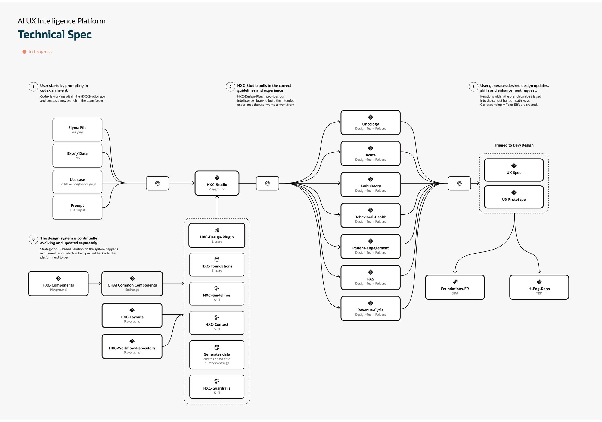
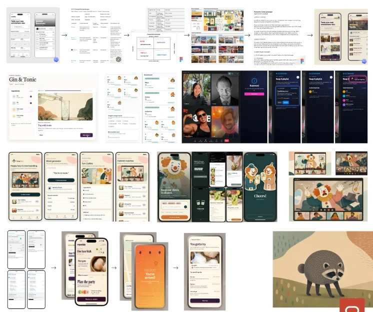
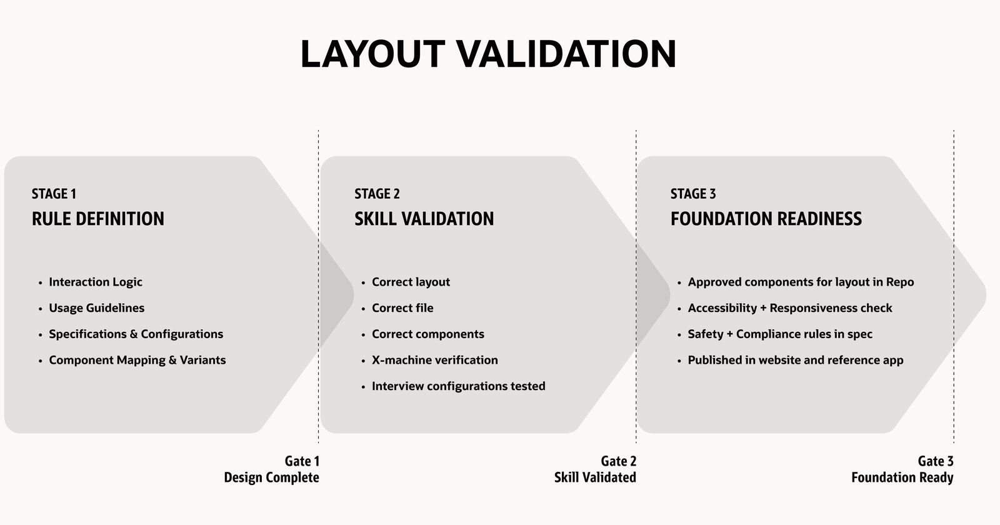

Oracle Health
Director, User Experience Design. I established Experience Core, the platform design team that owns the interaction patterns, components, design system, and research practice across Oracle Health's clinical products. Experience Core sets the design standard for five product teams and dozens of clinician-facing applications. Most of the work is unreleased and stays inside Oracle. What I can show is the operating model, because the operating model is the work. I am a named inventor on eight patent applications filed by Oracle during this period.
2024 to present
Organize around the journey
Experience Core inherited thirty-four patterns with no structure. I grouped them by the stage of the clinician's journey they serve: access, triage, interpret, execute, collaborate, follow up. Each stage has a job the user is trying to do, in their words. Pattern ownership, and then the team itself, was organized the same way, so a designer owns a stretch of the journey rather than a pile of components.

From comps to rules
We've stopped shipping Figma comps. I treated it as an operating-model shift rather than a tooling swap. We split the output in two. Components get guidelines, which are reference material a person or a model can look up. Layouts and patterns get skills, which carry the judgment about when to use something, when not to, and how to configure it. The deliverable became the rules, not the pictures. A skill selects and configures; it does not code.
I wrote the first skills myself so I understood what the toolchain actually needed, then gave each designer ownership of a pattern and its skill. We built an internal prototyping pipeline, custom tooling, and a shared skill library in a team repo. Concept to testable prototype went from weeks to days, and the team validated considerably more concepts per cycle, internally and with customers.

Upskilling the team
A new toolchain is a leadership problem before it is a tooling problem. I ran a learning day: no product work, no clinical constraints, a made-up brief per designer, and one rule, ship a working prototype by the end of the day. Everyone did. Some of it was silly on purpose. That was the point; the fear of the tool went away in an afternoon.
From there each designer took ownership of a pattern and its skill, so the learning had somewhere to land. The prototyping pipeline, the custom tooling, and the shared skill library in the team repo all came out of designers building for themselves, not out of a mandate. Concept to testable prototype went from weeks to days.

Three gates and a definition of done
Layouts kept getting misaligned because nobody shared a definition of done. I wrote one, as three gates. Release approval by the platform leads with Dev and Product follows the third.
Landing it meant sequencing alignment deliberately: eight Dev and PM pillar leads first, then SVP peers, then the top. The Action List skill and a three-role human-factors demo became the reference example senior engineering leadership pointed to.